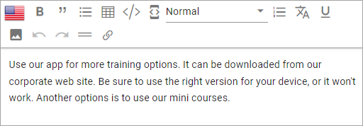
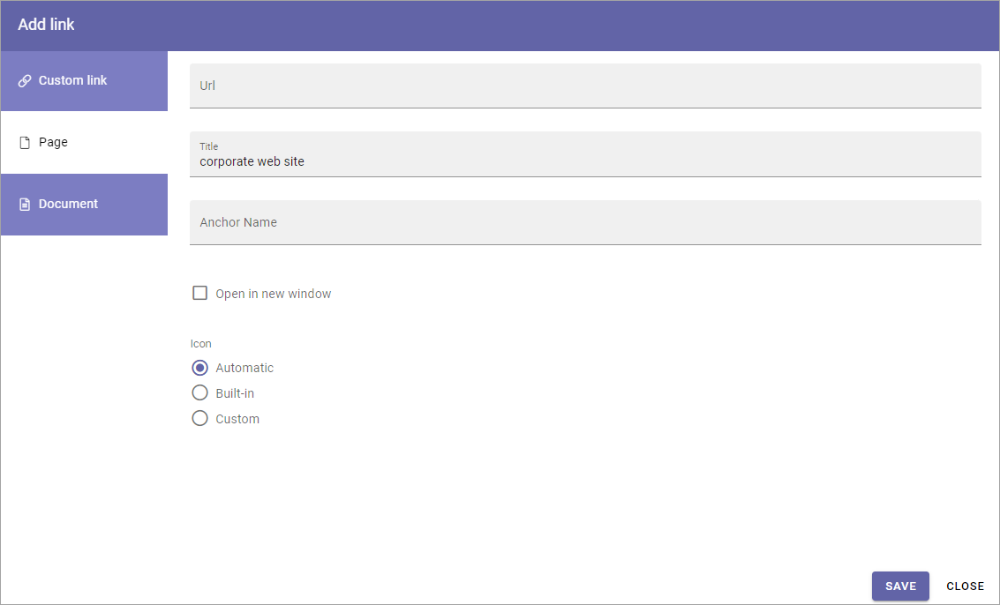
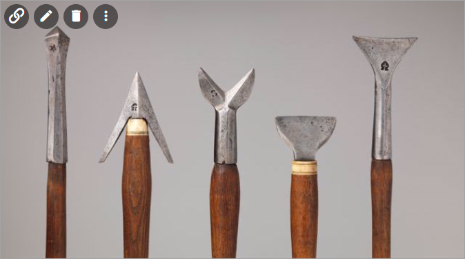
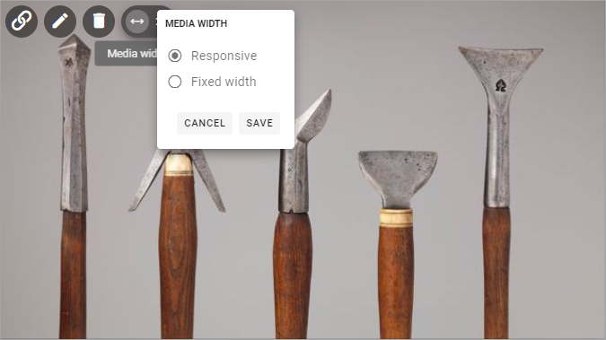
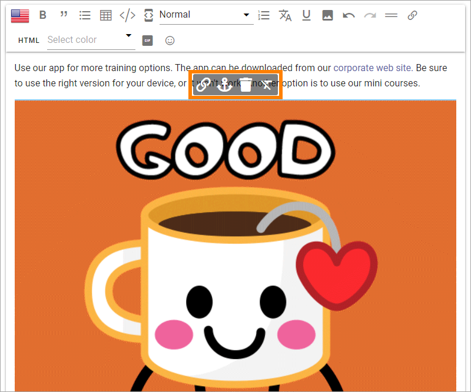
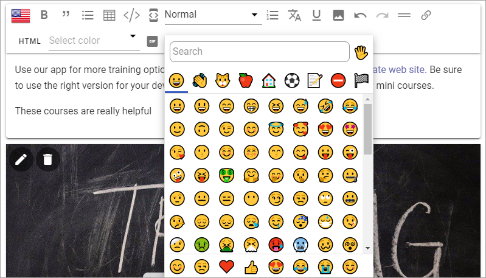
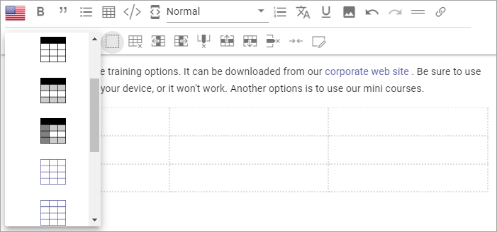

Editing text with the RTF Editor¶
When editing text in Omnia, a RTF editor can be available. What is available in the editor is set up in Omnia Admin, and in a few cases in the block itself.
Note! Options available in the RTF Editor can differ a lot, depending on how it’s set up. Not all options described below may be available.
For more information about the settings, see: RTF Editor Settings
In Omnia 6.12 and later it can be possible to add animated gifs, and emitcons in the RTF Editor. For more information, see the heading “Add an animated GIF” and the heading “Add an emoticon” below.
Using the RTF Editor¶
Here’s the options that may be available in the editor:
There are two lists and a number of icons available. You use the flag to note the language for the text you’re entering.
You point at an icon for a tool tip. Here’s an example:

Some options are also available as a floating toolbar, when text is selected, for example Add Link and Keep Text Only:

Se below for more information.
Add style¶
A number of styles can be available. To add a style, do the following:
Select the text.
Open the Styles list and select style.

This example only shows headings, but any style can be added to this list in Omnia Admin (see link above).
Add link¶
Too add a link, do the following.
Click where the link should be added, or select some text that should the clickable text for the link.
Click the icon in the toolbar at the top, or in the floating toolbar.

The Add Link general asset is shown. If you selected text, it’s added to the Title field:
See this page for more information: Add Link
To edit or remove a link:
select some of the clickable text for the link.
Use the icons in the floating toolbar.

Add link to an Enterprise term¶
You may be able to add a link to an enterprise term, and by that use the Enterprise Glossary functionality.
Here’s how to add such a link:
Type the text as usual and when you type something that match a term in the Enterprise Glossary, it’s highlighted.

To add a link to that term (you don’t have to), click the term and the following is shown:
Click the left icon to create the link (the one to the left to remove it).
For more information about Glossary Terms, see: Enterprise Glossary
Add and edit Media¶
You can add an image or a video to the text. This is how:
Click where the image or video should be added.
Click the Media icon.

Use the Media Picker to add the image or video.
See this page for more information: Media Picker
The image/video area fills up the whole width (same width as the text), the height/width ratio intact. Some tools also becomes available on the image/video:

From left to right (for a video):
To edit the video in Media Picker.
To remove the video.
To set the video width.
For an image, the tools are slightly different:
From left to right:
To create a clickable link on the image (makes the whole image clickable).
To edit the image in Media Picker.
To remove the image.
To set the image width.
To create a clickable link, click the link tool shown on the image and use the Add link general asset to add the link, see: Add Link
When you click the tool to set the image width, the the tool becomes two. Click the left one to set the width:

The following is shown:
Responsive width is the default, meaning the image fills the whole width of the RTF area in the block, with the height/width ratio intact. (This works the same for a video).
You can also set an exact width in pixels by selecting “Fixed Width”.
Here’s an example with the image width set to 200 pixels:

Add an animated GIF¶
In Omnia 6.12 and later, it can be possible to add an animated GIF to the RTF Editor, using this icon:
click where the animated GIF should be placed.
Click the icon.
Something like the following is now shown:

Use the search field or just browse to find an animated GIF.
Click the GIF to add it.
Click the GIF in the RTF Editor, for editing options.
Using the tools, you can add a clickable link, add an anchor name for the GIF, or remove the GIF:
For information about how to add a clickable link, see above under the heading “Add and edit Media”. For information about anchors, se the heading “Add an anchor (bookmark)” below.
Add an emoticon¶
In Omnia 6.12 and later, it can be possible to add an emoticon to the RTF Editor, using this icon:
click where the emoticon should be placed.
Click the icon.
Something like the following is now shown:
Use the search field or just browse to find the emoticon you want.
Click the emoticon to add it. (You can add more than one if you want to).
Click outside the emoticon window to close it.
Add a table¶
To add a table, do the following:
click where the table should be placed.
Click the Table icon.

Click somewhere in the table for more options.
Something like the following now becomes available:

Most of these option you recognize from other applications, for example Microsoft Word.
In the Table Styles list, a number of styles are available:
You can also style an individual cell using the icon to the far right.

Pasting text only¶
A well known problem when pasting text from other sources into an HTML environment is that styles and the like from the original text does not work - or is not wanted. To make that problem go away, you can paste the text as Text only.
All style tags are removed. Default HTML styles is kept.
Paste the text.
Click the Keep text only icon.

You can also use this option on text you already have in the block. Just select the text and the option becomes available.
Pasting contents from Microsoft Word¶
When pasting contents from a Microsoft Word document into a Rich Text field, some of the text formats can also be pasted. Headings are also regornized and the RTF Editor settings for these headings are applied.
Note that bold, underscore and headings are considered default HTML styles and will be kept, with the RTF Editor settings, even when pasting text only is selected.
In Omnia 6.12 and later, images from the Word document are also pasted, if you select them. Note that this apply to Rich Text fields (blocks) only. It does not work for plain text.
Add an anchor (bookmark)¶
Anchors can used in the Add Link general asset and when creating a link button using the Action button block. So, if you add an anchor (bookmark) to the text, links can be created to that anchor.
Here’s how to add an anchor:
Type the text.
Select the text where the anchor should be placed.
Click the anchor icon.
Add an anchor name and save.

For more information about Add link, see: Add link
For more information about the Action button block, see: Action button
Using Machine Translation¶
If the option is available you can machine translate the text in a block, this way:
Click the icon.
Select the language to translate to.

Any language can be selected here (in Omnia 6.8 and later). The ones set up in Omnia Admin are shown at the top of the list. To select another language, select “Show all Languages” at the bottom of the list.

Note! You can use Ctrl-Z or just Discard Changes if you change your mind.
HTML¶
If it’s available, you can work with the HTML Code, if you know how. When you click the icon a separate window is opened, where you do your HTML work.